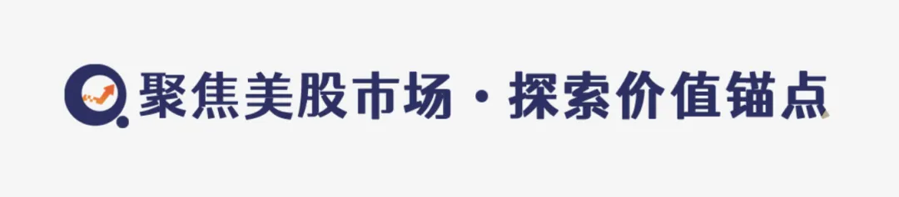
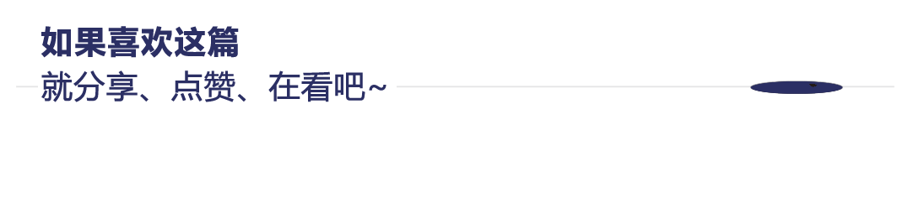

当 Anthropic 再次发布被市场称为“颠覆性”的 AI 工具后，资本市场给出了极为直接且残酷的反馈——IBM Corp 单日暴跌超 13%。这一数字在通常波动率较低的传统科技蓝筹股中显得尤为刺眼。然而，这绝非一次孤立的财报波动，也不是简单的估值修正，而是 AI 浪潮持续冲击传统软件商业模式的又一块“多米诺骨牌”。
【如需和我们交流可扫码添加进社群】
从年初至今，全球软件板块的估值体系正在经历一场深刻的重塑。生成式 AI 与智能体（Agent）的普及，使得“人力 + 订阅”的旧逻辑正被“模型 + 算力 + 数据”的新逻辑快速替代。在这个新旧交替的十字路口，问题是：IBM 真的被颠覆了吗？还是在一次情绪宣泄中被“错杀”？更关键的是，对于投资者而言，它何时才有抄底价值？这背后，既是行业范式的更替，也是资本耐心的边界测试。
AI正在改写软件的“护城河逻辑”，
IBM 的结构性困境浮出水面
过去二十年，软件行业的护城河主要建立在两个基础之上：一是极高的迁移成本，二是复杂的企业级定制化能力。IBM 正是这一时代的典型代表。其营收结构长期依赖咨询服务、混合云解决方案以及大型企业系统整合。这种模式的优势在于收入稳健、客户粘性高，但劣势同样明显：增长缓慢，且高度依赖人力投入。在传统的 IT 架构中，企业数字化转型是一个“人驱动的项目制”过程，需要大量的系统架构师、咨询师和开发人员驻场，这正是 IBM 咨询与全球技术服务部门的核心利润来源。
然而，AI 大模型的出现正在从根本上瓦解这种结构性优势。
以 Microsoft 和 Google 为代表的新一代平台型巨头，正在通过将大模型深度嵌入办公、开发与云平台，彻底改变企业获取技术能力的方式。企业不再需要高度定制的咨询式部署，而是通过 API 接口和 AI 智能体实现“自动化重构”。例如，过去需要 IBM 顾问团队花费数月梳理的财务流程，现在可能通过调用大模型接口，在几周内由智能体自动完成代码生成与流程编排。企业数字化转型，正从“人驱动的项目制”转向“模型驱动的模块化”。
这正是 IBM 的痛点所在。
尽管 IBM 拥有自研的 Watsonx 模型和混合云架构，但其 AI 生态的影响力远不及 OpenAI、Anthropic 等新锐模型公司，更缺乏类似 Azure、GCP 那样的云算力规模优势。在 AI 时代，算力即权力，数据即燃料。IBM 的混合云更多被视为传统 IT 升级方案，而非 AI 原生平台。其底层架构中仍背负着大量遗留系统的包袱，这使得其在响应 AI 快速迭代的需求时，显得笨重而迟缓。
当 Anthropic 推出新的企业级智能体工具时，市场担忧的核心在于：未来企业可能直接调用模型能力，而不是通过咨询公司进行系统搭建。咨询业务利润率本就有限，且属于线性增长模式，一旦需求被 AI 压缩，IBM 的现金流模型将受到双重挤压——不仅收入增长受限，利润率也可能因人员冗余而下滑。
这也是为何资本对 IBM 的反应如此剧烈。在投资者眼中，它不再被视为"AI 受益者”，而被归类为"AI 替代对象”。软件股被颠覆的趋势没有改变，只是从中小 SaaS 扩散到了传统科技蓝筹。IBM 曾经引以为傲的“服务壁垒”，在 AI 的自动化能力面前，可能正转化为“转型包袱”。
暴跌是错杀，还是价值陷阱？
IBM 的底层资产需要重新定价
但情绪并不等于事实。资本市场的恐慌往往会在短期内放大风险，而忽视企业的底层韧性。
客观来看，IBM 的基本面并未在一夜之间恶化。其自由现金流（FCF）依然稳定，分红率高，债务结构可控，且在全球大型 enterprise 客户中的粘性依旧存在。相比高估值、高波动的 AI 新贵，IBM 更像是一家典型的现金牛型公司。对于追求稳定收益的防御型投资者而言，IBM 的股息率具有相当的吸引力。
问题在于——现金流是否能抵御“增长消失”？
在股票估值模型中，长期价值取决于未来现金流的折现。如果一家公司虽然当前赚钱，但未来增长预期为零甚至负增长，那么其估值中枢必然下移。从全球企业 IT 支出结构来看，增量预算正在向 AI 算力、数据平台、模型服务集中。传统 IT 运维、本地服务器维护以及系统整合的预算占比逐年下降。若 IBM 无法在 AI 原生架构中占据核心位置，那么其营收增速可能长期维持在低个位数，甚至无法跑赢通胀。
市场给出的 13% 暴跌，本质上是在重新评估其长期增长天花板，而非当期利润。投资者正在用脚投票，质疑 IBM 是否具备在 AI 时代维持定价权的能力。
那么，是否存在“错杀”成分？
这取决于一个关键变量：IBM 能否在 AI 生态中找到不可替代的位置。
如果 IBM 仅仅是一个“过渡型供应商”，帮助企业在完全上云之前做缓冲，那么估值中枢下移是趋势性的，当前的股价可能仍是“价值陷阱”。但如果其混合云与企业数据安全能力成为 AI 落地的基础设施，那么它可能是被低估的“隐形底座”。
我们需要看到，AI 的落地并非只有“云端大模型”这一条路。在金融、医疗、政府等强监管行业，数据隐私和合规性是首要考量。这些客户无法将核心数据完全托管给公有云巨头，他们需要的是私有化部署或混合云架构。IBM 在这一领域深耕多年，拥有深厚的信任积累和合规经验。如果 IBM 能将 Watsonx 与 Red Hat OpenShift 深度结合，成为企业私有 AI 部署的首选平台，那么它就构建了一道新的护城河。
目前市场分歧在于——IBM 的 AI 布局究竟是战略转型，还是防御性姿态。如果是前者，它需要展现出激进的投入和清晰的路线图；如果是后者，它只是在尽力延缓衰退。这决定了它是价值陷阱，还是周期底部。投资者需要警惕的是，不要将“低市盈率”误认为“低估”，在技术范式转移期，传统的 PE 估值法往往会失效。
何时抄底？不是看跌幅，
而是看 AI 渗透率拐点
对于投资者而言，抄底 IBM，不是一个关于价格的问题，而是关于时间的问题。
在历史上，IBM 往往在行业周期重估完成后才会迎来估值修复。上世纪 90 年代，郭士纳带领 IBM 从硬件向服务转型，经历了数年的阵痛期才迎来重生。如今，面对 AI 浪潮，IBM 同样需要经历痛苦的去旧迎新过程。若 AI 替代传统软件的趋势仍在加速，那么 IBM 的估值压缩可能尚未结束。盲目接飞刀，可能会面临“越跌越贵”的困境。
真正的抄底信号，可能来自三个层面：
第一，企业级 AI 部署进入规模化阶段，IBM 在其中获得可验证的订单增长。目前的市场噪音太多，我们需要看到具体的合同金额和落地案例。当 IBM 的 AI 相关订单不再是“试点项目”，而是成为客户年度预算的核心部分时，才是基本面反转的信号。
第二，其 AI 相关收入占比显著提升，而不仅仅停留在战略叙事层面。财报中需要明确拆分出 AI 软件与平台服务的收入增速，且该增速应显著高于传统基础设施业务。只有当新业务的增长足以抵消旧业务的衰退时，增长逻辑才算真正打通。
第三，市场对软件股的整体恐慌情绪出现拐点。这通常伴随着美联储货币政策的变化，或 AI 应用层出现杀手级产品，证明 AI 不仅能降本，更能创造增量收入。当市场从“担忧 AI 替代”转向“期待 AI 赋能”时，IBM 作为企业整合商可能会重新受益。
如果 AI 行业进入“算力红利→应用爆发”的第二阶段，IBM 作为连接底层算力与上层应用的中间件提供商，可能会重新受益。但若 AI 生态持续向头部模型与云平台集中，形成“赢家通吃”的局面，IBM 则会被边缘化。
因此，抄底逻辑更接近“左侧分批观察”，而非一次性押注反弹。投资者应密切关注其季度财报中的软件业务毛利率变化，以及管理层对资本开支（CapEx）的投向。如果资本开支大量流向 AI 基础设施而非回购股票，说明管理层在押注未来，这通常是一个积极信号。
结语：IBM的真正考验，是
能否活在 AI 时代的中心
IBM 的暴跌，是传统软件时代的一次缩影，也是新旧动能转换期的阵痛体现。
Anthropic 的发布只是导火索，更深层的冲击来自整个行业逻辑的重构。软件不再以“人力与许可”为核心，而是以“模型与算力”为中心。这个重构过程不会一蹴而就，但趋势已然确立。在这个新世界里，代码的边际成本趋近于零，服务的价值从“实施”转向“数据与场景”。
IBM 是否被错杀？短期或许有情绪成分，市场对于传统蓝筹的 AI 转型难度存在过度悲观的预期。但长期而言，决定其命运的不是跌幅，而是其在 AI 价值链中的位置。如果它能守住企业级数据安全的底线，成为混合 AI 架构的“守门人”，那么当前的低谷或许是历史的底部。反之，如果它无法摆脱对传统咨询业务的依赖，那么这场暴跌仅仅是漫长下坡路的开始。
在 AI 大潮中，真正安全的资产，不是历史辉煌，而是未来坐标。过去的成功经验和庞大的客户基数，在颠覆性技术面前，有时反而是转型的阻力。
